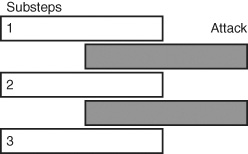
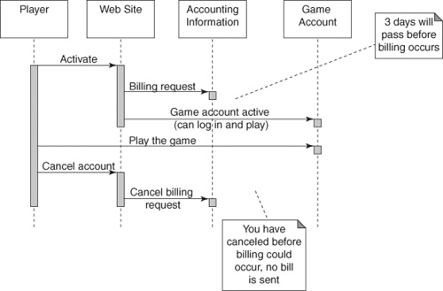
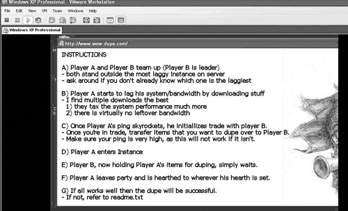

{% include JB/setup %}
{% raw %}
<div>
<a name="toppage" class="pcalibre calibre1"></a><table width="100%" border="0" cellspacing="0" cellpadding="0" class="sfbody"><tr valign="top" class="calibre2"><td class="calibre3"><a name="MainContent" class="pcalibre calibre1"></a><table width="95%" class="sfbody"><tr class="calibre2"><td class="pcalibre1 v"><!--Copyright (c) 2002 Safari Tech Books Online--><table width="100%" border="0" cellspacing="0" cellpadding="2" class="calibre4"><tr class="calibre2"><td valign="middle" class="v1 pcalibre1" height="5"></td></tr><tr class="calibre2"><td valign="middle" class="v1 pcalibre1"><table cellpadding="0" cellspacing="0" border="0" width="100%" class="calibre4"><tr class="calibre2"><td class="calibre6"><span class="calibre7"> </span>
                   
                  <span class="calibre7">   </span>
             <span class="calibre7"> </span></td></tr></table></td><td class="calibre8"/><td valign="middle" class="v2 pcalibre1"><a href="10061538.html" class="pcalibre calibre1"></a> 
           
          <span class="calibre7"><a target="_self" href="ch05.html" title="Previous section" class="pcalibre calibre1"></a></span>
				
				 
				
				<span class="calibre7"><a target="_self" href="ch05lev1sec2.html" title="Next section" class="pcalibre calibre1"></a></span></td></tr></table><div id="section" class="calibre15"><table width="100%" border="0" cellspacing="0" cellpadding="0" class="calibre4"><tr class="calibre2"><td valign="top" class="calibre8">Security Game Programming Networking Programming Greg Hoglund Gary McGraw Addison Wesley Professional Exploiting Online Games: Cheating Massively Distributed Systems<a name="ch05lev1sec1" class="pcalibre calibre1"></a>
<h3 id="title-IDAHKBCG" class="docSection1Title">Time and State Bugs in Games</h3>
<p class="docText">As we describe in <a class="pcalibre6 pcalibre5 calibre1" href="ch01.html#ch01">Chapter 1</a>, online games are a prime example of massively distributed programs. The big problem of moving state around when thousands of client processes are interweaving on a common server, over the network, in real time, leads precisely to the number one software security risk for online games—the race condition.</p>
<p class="docText">Race conditions and other problems with state are the primary source of bugs in online games. They are exacerbated by laggy network connections (which tend to warp time in interesting ways—sort of like black holes). By their very design, large online games require vast amounts of data storage distributed over many servers. Some servers may store accounting information for billing, while others store player statistics and inventory, and yet others store the current state of an online world.</p>
<p class="docText">Technically, the truth of the matter is that most MMOs don't really involve a single monolithic online world, but rather have many duplicate shards of what only seems to be a world. Copies of the online world WoW uses, for example, tend to limit the number of users to 50,000 players per server. EVE Online is a single online world, but that virtual world is distributed across such a large universe (think solar systems) that no one server ever gets overloaded.</p>
<p class="docText">The problem with multiple world shards is boundaries. Race conditions are found on the borders between software states—such as the state of being logged in and the state of being logged out. If everything happens atomically, that is, you go from being logged in to being logged out in one fell swoop without gazillions of steps, things can go alright. But if multiple steps are involved, and they are not protected by semaphores in what computer scientists call critical sections, trouble can crop up.</p>
<p class="docText">To make this clear, consider <a class="pcalibre6 pcalibre5 calibre1" href="#ch05fig01">Figure 5-1</a>. In this simple illustration, what should be an atomic process is divided into three steps. In a race condition attack, an attacker interleaves state-changing actions between the three parts in order to screw around with the state of the world. You can protect against this by marking all three steps as a critical section and only performing them all at once without allowing interleaving. Of course, holding everything up while a critical section runs can become a serious bottleneck, so sometimes developers cut corners.</p>
<a name="ch05fig01" class="pcalibre calibre1"></a><p class="calibre28"><center class="calibre29">
<h5 class="docFigureTitle">Figure 5-1. A simple race condition illustrated. The white rectangles represent three substeps of a process that should be atomic. Because they are not protected in a critical section, an attacker can interleave an attack by messing around with state between substeps (as represented by the gray rectangles).</h5>
</center></p><p class="docText">
</p>
<br class="calibre15"/>
<p class="docText">The sidebar Race Conditions 101 gives a simple example of a race condition that can happen in the real world. Who knows, maybe this has even happened to you? You see, these kinds of errors are all about time.</p>
<a name="ch05sb02" class="pcalibre calibre1"></a><p class="calibre28"><table cellspacing="0" width="90%" border="1" cellpadding="5" class="calibre4"><tr class="calibre2"><td class="calibre8">
<h2 class="docSidebarTitle">Race Conditions 101</h2>
<p class="docText">What is a race condition?</p>
<p class="docText">Let's say that Alice and Bob work at the same company. Through email, they decide to meet for lunch, agreeing to meet in the lobby at noon. However, they do not agree on whether they meant the lobby for their office, or the building lobby several floors below. At 12:15, Alice is standing in the company lobby by the elevators, waiting for Bob. Then it occurs to her that Bob might be waiting for her in the building lobby, on the first floor. Her strategy for finding Bob is to take the elevators down to the first floor, and check to see if Bob is there.</p>
<p class="docText">If Bob is there, all is well. If he isn't, can Alice conclude that Bob is either late or has stood her up? No. Bob could have been sitting in the lobby, waiting for Alice. At some point, it could have occurred to him that Alice might be waiting upstairs, at which point he took an elevator up to check. If Alice and Bob were both on an elevator at the same time, unless it is the same elevator, they will pass each other during their ride.</p>
<p class="docText">When Bob and Alice each assume that the other one is in the other place and is staying put and both take the elevator, they have been bitten by a race condition. A race condition occurs when an assumption needs to hold true for a period of time, but <a name="iddle1232" class="pcalibre calibre1"></a><a name="iddle1520" class="pcalibre calibre1"></a><a name="iddle1858" class="pcalibre calibre1"></a><a name="iddle2153" class="pcalibre calibre1"></a>actually might not; whether it does or doesn't is a matter of exact timing. In every race condition, there is a window of vulnerability. That is, there is a period of time where violating the assumption will lead to incorrect behavior. In the case of Alice and Bob, the window of vulnerability is approximately twice the length of an elevator ride. Alice can step on the elevator up until the point where Bob's elevator is about to arrive and still miss him. Bob can step on to the elevator up until the point that Alice's elevator is about to arrive. We could imagine the door to Alice's elevator opening just as Bob's door shuts. When the assumption is broken, leading to unexpected behavior, then the race condition has been exploited.</p>
<p class="docText">Reprinted by permission from <span class="docEmphasis">Building Secure Software</span>, by John Viega and Gary McGraw (Addison-Wesley, 2001).</p>
</td></tr></table></p><br class="calibre15"/>
<p class="docText">In this chapter, we describe some testing scenarios and templates that you can use to find and exploit timing-related bugs in online games. To show you that this is real, we highlight some of the very real bugs found and exploited in WoW.</p>
<a name="ch05lev2sec1" class="pcalibre calibre1"></a>
<h4 id="title-IDAGOBCG" class="docSection2Title">How to Game for Free</h4>
<p class="docText">One good way to illustrate events that unfold over time is to use a sequence chart. <a class="pcalibre6 pcalibre5 calibre1" href="#ch05fig02">Figure 5-2</a> shows a sequence chart for a simple state problem involving canceling your subscription.</p>
<a name="ch05fig02" class="pcalibre calibre1"></a><p class="calibre28"><center class="calibre29">
<h5 class="docFigureTitle">Figure 5-2. A sequence chart showing what happens when you cancel your subscription. Do you see the potential for a race condition in this sequence chart?</h5>
</center></p><p class="docText">
</p>
<br class="calibre15"/>
<p class="docText">Once you activate your account, several things happen. First, your accounting information is updated (you now owe the game company money). Second, your player account is added to a number of game databases. However, these events may not take the same amount of time. In fact, there is a window of vulnerability that opens between when your billing request arrives on the accounting server and when you are actually billed. This lag time is sometimes as long as three days. However, activation of your character is much shorter, often on the order of a few minutes. If you put on your black hat for a moment, you discover that you are in some sense "playing for free" during the window of vulnerability. You can log in and play now, and you won't be billed for three days! But wait, there's more. . . .</p>
<p class="docText">Let's say you get done playing at the end of the day (or more realistically, when the sun comes up and the room begins to brighten). Now, with your black hat still on your head, you log back into your online account management system and cancel your subscription. What happens at this point is rather interesting. Your player account is not deleted as you might think. Instead it is put immediately into a suspended state. At the same time, the accounting server gets a message to mark your account as nonbillable. Since all of this happens inside the three-day window of vulnerability, you never get a bill.</p>
<p class="docText">After a long day's rest working at the 7-Eleven counter, you come back home and get ready for another exciting night of gaming. You reactivate your account, and the three-day time gets reset to zero and starts ticking (again). You get to play all night (again), and when the sun comes up (again), you dutifully cancel your subscription.</p>
<p class="docText">You can continue playing the game for free in this fashion for years and never once get billed. Of course, the pattern of behavior in your account probably sticks out like a sore thumb. "Hey, wait, this guy cancels his account ten times a month, what's going on?" But rumor has it that this "play for free" attack works on WoW, or at least it did at one time. Just for the record, we have never tested this, as we firmly believe that people should pay the subscription fee if they intend to play a game.</p>
<a name="ch05lev2sec2" class="pcalibre calibre1"></a>
<h4 id="title-IDAEQBCG" class="docSection2Title">Using Bugs to Confuse State Boundaries</h4>
<p class="docText"><a name="iddle1202" class="pcalibre calibre1"></a><a name="iddle1228" class="pcalibre calibre1"></a><a name="iddle2084" class="pcalibre calibre1"></a><a name="iddle2100" class="pcalibre calibre1"></a><a name="iddle2140" class="pcalibre calibre1"></a><a name="iddle2150" class="pcalibre calibre1"></a>The state boundary we were gaming in the cancel/suspend example is a large one, but it is more closely related to business processes than it is to software. The good news is that there are plenty of software-related state boundaries rife with timing problems as well.</p>
<p class="docText">One of the most obvious software-related boundaries involves databases. Transactions that involve multiple databases are often susceptible to race conditions. Because virtual worlds are distributed across many servers, doing things like switching from one dungeon to another or flying from one continent to another often causes a player to be handed off from one server to another.</p>
<p class="docText">This kind of switch is a normal event in a game, and it has certainly been tested with some defined test plan by the game company's quality assurance (QA) department (not to mention plenty of players who have actually done the switch many times). But here is what happens in many QA shops. The test plan says something like "Inventory is supposed to remain constant when a player does activity47 at portal68." Then a tester logs in, goes to portal68, performs activity47, and checks to see if everything (such as, say, player inventory) is fine. This is what is known to software testers as a functional test. The problem is, this test is both boring and conventional!</p>
<p class="docText">You see, attackers don't often do what you're supposed to do. Instead, attackers focus on trying to do things that were never anticipated by the programmers. They do the unexpected, sometimes with insane results.</p>
<p class="docText">Here's an idea. Instead of gracefully walking through portal68, make sure you log out of the game while you're doing it. Pull the Ethernet cord out of the wall. Kill the game client with the task manager. When you're done, log back in and find out if anything juicy happened. Did you make it to the new continent or are you on the original side of portal68? What is the state of your character?</p>
<p class="docText">Let's step through some possibilities, again thinking with our black hat on. Let's say you end up on the original side of the portal. What will happen if you give some money to a player friend of yours just seconds before you kill the process, and that friend continues through the portal like normal? When you log back in this time, back on the original side of portal68, check your wallet. Was the money taken from your wallet, or did it reset itself along with your location? If it did reset (back to the original pre-give-some-away amount), does your friend have some money too on his side of the portal? If your money has doubled, you've found a duping bug—one of the most coveted bugs of all time in online gaming. Nothing like Xeroxing inventory for free!</p>
<p class="docText"><a name="iddle1426" class="pcalibre calibre1"></a>In WoW, a number of bugs like this are known to exist around entrances to instance dungeons. That's because instances are just like continents or any other location in WoW—they are handled on specific servers, and as players join an instance they are in reality a glob of data being transferred from one back-office server to another.</p>
<p class="docText">In general, a single instance server is responsible for serving all particular instances of a given dungeon. For example, all deadmines instances run on the same deadmines server. However, since this is a very popular quest in the game, the server tends to become overloaded, and it gets laggy. Laggy servers are ideal for trying to crowbar a race condition out of a game.</p>
<p class="docText"><a class="pcalibre6 pcalibre5 calibre1" href="#ch05fig03">Figure 5-3</a> shows a duping trick as sold (for actual money) by a company selling WoW hacks and exploits. This is a prime example of a race condition packaged as an exploit program by the vendor &lt;<a class="pcalibre6 pcalibre5 calibre1" target="_blank" href="http://www.wow-dupe.com">http://www.wow-dupe.com</a>&gt;. We purchased a copy to see if it would work.</p>
<a name="ch05fig03" class="pcalibre calibre1"></a><p class="calibre28"><center class="calibre29">
<h5 class="docFigureTitle">Figure 5-3. A screenshot of a dupe exploit sold by a purveyor of hacks and exploits online.</h5>
</center></p><p class="docText"><div class="v8 pcalibre3 pcalibre2"><a target="_blank" href="fig05-03_alt.jpg" class="pcalibre calibre20">[View full size image]</a></div></p>
<br class="calibre15"/>
<p class="docText">We were duped, or maybe doped, out of our $19.95 because the duping exploit didn't work when we tried it. However, the exploit as it is described sounds legit to us, and it makes a prime example of how these race conditions can be exploited.</p>
<p class="docText">Notice that in the screenshot shown in <a class="pcalibre6 pcalibre5 calibre1" href="#ch05fig03">Figure 5-3</a>, there is a specific description of what the user should do to cause bandwidth to be consumed <a name="iddle1117" class="pcalibre calibre1"></a><a name="iddle1227" class="pcalibre calibre1"></a><a name="iddle1231" class="pcalibre calibre1"></a><a name="iddle1234" class="pcalibre calibre1"></a><a name="iddle1256" class="pcalibre calibre1"></a><a name="iddle1554a" class="pcalibre calibre1"></a><a name="iddle1554" class="pcalibre calibre1"></a><a name="iddle1555" class="pcalibre calibre1"></a><a name="iddle1638" class="pcalibre calibre1"></a><a name="iddle2053" class="pcalibre calibre1"></a><a name="iddle2149" class="pcalibre calibre1"></a><a name="iddle2152" class="pcalibre calibre1"></a><a name="iddle2155" class="pcalibre calibre1"></a>on the local Internet connection. There is a ping value meter you can use in WoW to determine how much your client program is lagging. However, if you are really interested in exploring race conditions, server lag is much more important than your local network connectivity or client lag. And server lag is not something you can control. You might simulate server lag on your client machine to see what happens by using a proxy server to delay TCP packets as they come and go. The proxy server connects to the game server and allows you to tune the delay as necessary. This gives you much better control over client lag than "downloading stuff."</p>
<a name="ch05lev2sec3" class="pcalibre calibre1"></a>
<h4 id="title-IDAQXBCG" class="docSection2Title">Using Botnets to Lag a Game Server</h4>
<p class="docText">As it turns out, botnets are very effective ways to induce lag on the net (see the Black Hat Corner on botnets for the basics). Thus botnets pose a very serious security risk for online games. By using a botnet to cause a given game server to lag, an attacker can set things up for a more efficient race condition exploit.</p>
<p class="docText">Finding the IP number of the game server is very easy. Given an IP number, a botnet controller could be contracted to carry out various activities to lag the game server; the online game thief could then carry out a race condition attack with much better success. Lag multipliers might include tricks such as logging into the server multiple times with the same account—multiple logins would be denied, it stands to reason, but processing the multiple logins certainly causes some computational delay. Countless similar lag multipliers exist. Once the server becomes lagged, race conditions are exacerbated; the exploiter can then begin duplicating items or gold, or taking advantage of whatever the exploit is, resulting in a better bottom line.</p>
<a name="ch05lev2sec4" class="pcalibre calibre1"></a>
<h4 id="title-IDA4XBCG" class="docSection2Title">Using Bugs to Change Character States</h4>
<p class="docText">Many activities in online games cause changes in character state. One prime contributor in WoW involves spells. An interesting technique is to cast a spell on yourself before attempting some other action. For example, you might try casting a spell on yourself that changes the way you travel and then request a flight path or travel a different way. Many ideas in this section involve doing something that "nobody would ever do," which is a classic attacker riff.</p>
<p class="docText">There are similar "two at once" strategies that occasionally cause interesting results. Spell interactions in WoW can be surprising, for example. Here's one. Cast the spell called Aspect of the Cheetah on your pet, then <a name="iddle1104" class="pcalibre calibre1"></a><a name="iddle1106" class="pcalibre calibre1"></a><a name="iddle1116" class="pcalibre calibre1"></a><a name="iddle1235" class="pcalibre calibre1"></a><a name="iddle1236" class="pcalibre calibre1"></a><a name="iddle1240" class="pcalibre calibre1"></a><a name="iddle1611" class="pcalibre calibre1"></a><a name="iddle2031" class="pcalibre calibre1"></a><a name="iddle2058" class="pcalibre calibre1"></a><a name="iddle2059" class="pcalibre calibre1"></a><a name="iddle2156" class="pcalibre calibre1"></a>send it far away to attack a mob, then request a flight. All of these activities are standard WoW activities, but combined in this way, interesting state interactions occur. In this particular case, instead of automatically flying, you end up gaining control of the mount and can steer it yourself. <a class="pcalibre6 pcalibre5 calibre1" href="#ch05fig04">Figure 5-4</a> shows a frame from a YouTube video demonstrating the combination. Note that these kinds of state interactions are not limited to WoW; state combination attacks work as well against most MMORPGs.</p>
<a name="ch05fig04" class="pcalibre calibre1"></a><p class="calibre28"><center class="calibre29">
<h5 class="docFigureTitle">Figure 5-4. In this picture, the player is controlling the flying creature and steering it along the ground, something that is not supposed to be possible. See the video at &lt;<a class="pcalibre6 pcalibre5 calibre1" target="_blank" href="http://youtube.com/watch?v=FbEOZnUF66o">http://youtube.com/watch?v=FbEOZnUF66o</a>&gt;.</h5>
</center></p><p class="docText">
</p>
<br class="calibre15"/>
<a name="ch05sb03" class="pcalibre calibre1"></a><p class="calibre28"><table cellspacing="0" width="90%" border="1" cellpadding="5" class="calibre4"><tr class="calibre2"><td class="calibre8"><a name="ch05sb03__supertitle" class="pcalibre calibre1"></a>
<h2 class="docSidebarTitle">Black Hat Corner: Botnets</h2>
<p class="docText">Malicious hackers have been taking control of Internetworked computers for decades. Exploiting a machine involves finding a remote security vulnerability (usually in the software installed on a target machine) and exploiting that vulnerability. Early attacks based on exploiting a particular software bug called the buffer overflow would result in the creation of an interactive shell for the attacker. The payload code used during one of these attacks became known as shell code<span class="docEmphasis">. The Shellcoder's Handbook</span> by Jack Koziol et al. (Wiley, 2004) is an excellent reference explaining how such attack code works, as is our book <span class="docEmphasis">Exploiting Software</span> (Addison-Wesley, 2004).</p>
<p class="docText">More modern attacks install an interactive back door such as a stealthy, undetectable rootkit on the victim's machine. The book <span class="docEmphasis">Rootkits</span> by Greg Hoglund and James Butler (Addison-Wesley, 2005) explains in great detail how this technology works. One of the main purposes of installing a rootkit is to ensure that it is trivially easy to connect to and control a machine that is "0wn3d" in the future. This cuts down on the expense of rerooting a machine every time you need it to do something for you.</p>
<p class="docText">Entire collections of machines that are thusly rooted can be controlled by one attacker remotely. In this approach, each rooted machine is known as a <span class="docEmphasis">bot</span>, and the resulting collection of machines is a <span class="docEmphasis">botnet</span>. Once formed, a botnet can leverage the entire combined distributed computing power of thousands of machines to do the bidding of the attacker (known in hacker jargon as a <span class="docEmphasis">bot herder</span>). Botnets have been used in distributed denial-of-service attacks, massive scanning attacks, spamming, credential farming, and other attacks requiring huge computational resources.</p>
<p class="docText">Modern attack tools that build botnets are designed to propagate automatically, using 0day exploits to build huge networks of compromised machines.</p>
<p class="docText">Botnets have their uses in exploiting online games. One obvious use is to lag a server so that time-and-state-related bugs are easier to exploit.</p>
</td></tr></table></p><br class="calibre15"/>
<p class="docText">Sometimes mutually exclusive spells or abilities cause interesting state changes. As an example, enable Aspect of the Cheetah before joining the battleground, then after joining the battleground, enable Aspect of the Hawk—you may end up with both aspects at once.<sup class="docFootnote"><a class="pcalibre6 pcalibre5 calibre1" href="#ch05fn04">[4]</a></sup> This is a state-tracking problem with interesting side effects. The base issue is that the game, WoW in this case, has so many interacting states that unanticipated combinations lead to interesting behavior.</p><blockquote class="calibre24"><p class="docFootnote1"><sup class="calibre31"><a name="ch05fn04" class="pcalibre calibre1">[4]</a></sup> We found this trick at &lt;<a class="pcalibre6 pcalibre5 calibre1" target="_blank" href="http://www.edgeofnowhere.cc/viewtopic.php?t=328898">http://www.edgeofnowhere.cc/viewtopic.php?t=328898</a>&gt; (posted by Snarg).</p></blockquote>
<p class="docText">Though WoW designers certainly put plenty of thought into various spell interactions, they seem to have limited their thinking to single characters. When multiple characters of different classes get involved in jointly casting spells, the combinatorial aspects get interesting and can involve surprising results that are beneficial to gamers. The combinatronics are the trick.</p>
<p class="docText">Some aspects of WoW allow other people to control your character. Things like mind control and transference involve having data copied into <a name="iddle1223" class="pcalibre calibre1"></a><a name="iddle1257" class="pcalibre calibre1"></a><a name="iddle1725" class="pcalibre calibre1"></a><a name="iddle1815" class="pcalibre calibre1"></a><a name="iddle1877" class="pcalibre calibre1"></a>your state. Interesting tricks in this situation include things like going through different portals or having the "controller" log out. Just try things that "nobody would ever do" when you're in the special situation. For example, a spell known as Presence of Mind can be made permanent on a character by having someone mind control the character shortly after casting this spell and subsequently exiting a battleground.<sup class="docFootnote"><a class="pcalibre6 pcalibre5 calibre1" href="#ch05fn05">[5]</a></sup></p><blockquote class="calibre24"><p class="docFootnote1"><sup class="calibre31"><a name="ch05fn05" class="pcalibre calibre1">[5]</a></sup> For more, see &lt;<a class="pcalibre6 pcalibre5 calibre1" target="_blank" href="http://www.edgeofnowhere.cc/viewtopic.php?t=327477">http://www.edgeofnowhere.cc/viewtopic.php?t=327477</a>&gt; (posted by Snarg).</p></blockquote>
<p class="docText">Sometimes games use buffers to hold various pieces of state. If these buffers don't get properly cleared, or if they don't time out, interesting things can happen. Remember, when there is lag, anything can happen.</p>
<p class="docText">Sometimes doing lots of things to change state quickly can be used to confuse the game and thwart the rules. One WoW trick involves using spells to change states very rapidly. For example, use Bloodrage to remove a warrior from attack mode, followed immediately by Charge (which is allowed only while not in combat). If you do this rapidly enough, you can effectively use Charge almost continuously during interplayer fighting.<sup class="docFootnote"><a class="pcalibre6 pcalibre5 calibre1" href="#ch05fn06">[6]</a></sup> Remember, our examples come from WoW, but the phenomenon exists in all complex games. Also note that these specific cheats will most likely be patched by the time you read this. Our point is not to discuss a specific cheat but rather to give you examples of the general problem so that you understand what cheats are like.</p><blockquote class="calibre24"><p class="docFootnote1"><sup class="calibre31"><a name="ch05fn06" class="pcalibre calibre1">[6]</a></sup> Once again, see &lt;<a class="pcalibre6 pcalibre5 calibre1" target="_blank" href="http://www.edgeofnowhere.cc/viewtopic.php?t=324303">http://www.edgeofnowhere.cc/viewtopic.php?t=324303</a>&gt; (posted by Snarg).</p></blockquote>
<ul class="calibre18"></ul></td></tr></table><table width="100%" border="0" cellspacing="0" cellpadding="2" class="calibre4"><tr class="calibre2"><td valign="middle" class="v1 pcalibre1" height="5"></td></tr><tr class="calibre2"><td valign="middle" class="v1 pcalibre1"><table cellpadding="0" cellspacing="0" border="0" width="100%" class="calibre4"><tr class="calibre2"><td class="calibre6"><span class="calibre7"> </span>
                   
                  <span class="calibre7">   </span>
             <span class="calibre7"> </span></td></tr></table></td><td class="calibre8"/><td valign="middle" class="v2 pcalibre1"><a href="10061538.html" class="pcalibre calibre1"></a> 
           
          <span class="calibre7"><a target="_self" href="ch05.html" title="Previous section" class="pcalibre calibre1"></a></span>
				
				 
				
				<span class="calibre7"><a target="_self" href="ch05lev1sec2.html" title="Next section" class="pcalibre calibre1"></a></span></td></tr></table><table width="100%" border="0" cellspacing="0" cellpadding="2" class="calibre4"><tr class="calibre2"><td valign="top" class="calibre14"><span class="calibre7"></span></td></tr></table></div><!--IP User 2--></td></tr></table></td><td class="calibre3">
                         
                      </td></tr><tr class="calibre2"><td colspan="3" valign="bottom" class="calibre3"><br class="calibre15"/><p class="v5 pcalibre1"></p><br class="calibre15"/></td></tr></table></div>

{% endraw %}

